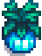
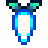

Azada + nieve
Winter Root y Snow Yam se obtienen removiendo tierra en ciertos puntos; no dejes la azada guardada durante todo el invierno.

PausaLa granja baja el ritmo, el paisaje se vuelve blanco y el tiempo que antes ocupaba el riego empieza a liberar espacio para otras aventuras.
En pocas palabras
La agricultura exterior se reduce drásticamente, así que la atención puede pasar a pesca, minería, recolección, amistades, mejoras y planificación.
Antes de seguir
Estas notas concentran lo que más fácilmente se pierde cuando sólo se mira la lista de cultivos.
Winter Root y Snow Yam se obtienen removiendo tierra en ciertos puntos; no dejes la azada guardada durante todo el invierno.
El invierno concentra actividades y peces que no aparecen durante el resto del año; puede ser una buena estación para recuperar tiempo perdido en pesca.
Con poca agricultura, el invierno es buen momento para mejorar herramientas, ordenar máquinas y llegar a Primavera con espacio y reservas.
Una selección práctica de cultivos y forrajes que ayuda a reconocer qué merece prioridad en esta estación.
Una selección práctica para reconocer los cultivos más representativos de la temporada sin convertir el journal en una segunda Wiki.
Un cultivo especial de invierno que también puede convertirse en cultivo gigante.
Ver ficha en la Wiki →
Puede aparecer al plantar Semillas invernales; útil como objeto de recolección y regalo.
Ver ficha en la Wiki →
Otra de las posibles cosechas de las Semillas invernales.
Ver ficha en la Wiki →
Crece a partir de Semillas invernales y encaja especialmente bien con la temporada.
Ver ficha en la Wiki →
Una cosecha de las Semillas invernales, relacionada también con el forrajeo de invierno.
Ver ficha en la Wiki →* En las Semillas invernales, el tiempo corresponde al cultivo de las semillas (7 días); el objeto concreto que obtenés depende del resultado aleatorio.
Seguimos recorriendo